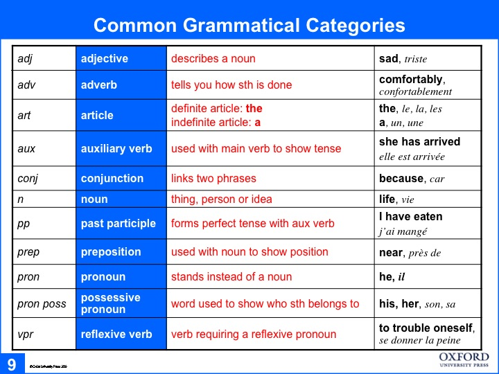

Correction
symbols for writing assignments
ag--accord; agreement. Masculine/feminine/singular/plural
angl--anglicisme; that's not how the French would say it. Don't translate word for word.
art--article; wrong article or article missing
gdr--genre; wrong gender
imp--use the imperfect
prép--need a preposition
pc--use the passé composé
pl--use plural
R-SVP= revise your composition, please (s'il vous plaît)
sing--use the singular
sp--orthographe; spelling
TDV--temps du verbe; wrong verb tense
Circle with nothing in it--something small missing, an accent, a letter
Circle with a word in it--word with a small mistake
^ --a word missing here
[ ? ] --I can't understand what you're trying to say here
p.-- A reference to the place in our text book where this grammar point is explained.
